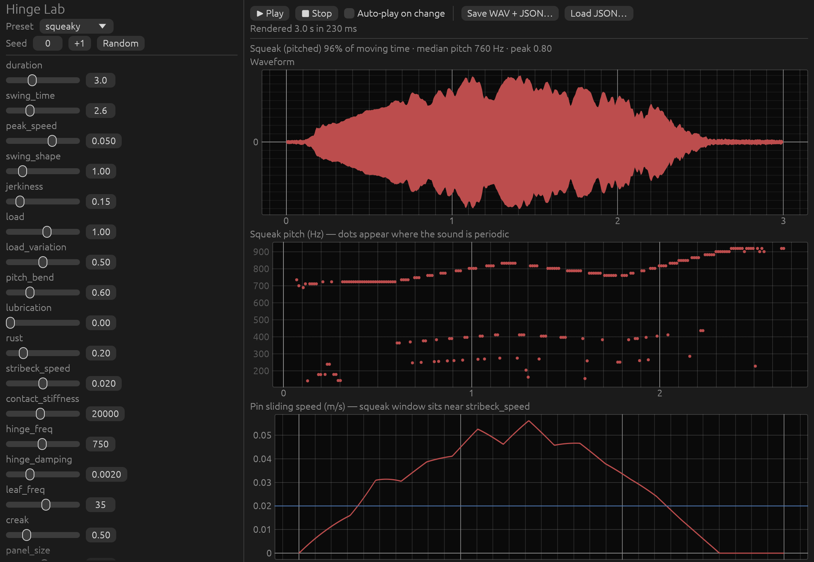

Hinge Lab simulates elasto-plastic stick-slip friction between the hinge pin and barrel, driving hinge and door-leaf resonances, radiated through a wood panel and door frame. Sliders re-render in about 0.1 s, and the same parameters plus seed always give the same sound.

Each JSON file reproduces its sound exactly.
| squeaky | squeaky.json | |
| oiled | oiled.json | |
| horror_slow | horror_slow.json | |
| rusty_groan | rusty_groan.json | |
| fast_swing | fast_swing.json | |
| cabinet_tiny | cabinet_tiny.json |
These behave correctly physically, but each is one smooth, slowly gliding tone with few overtones, unlike a real door. Measuring real squeaks (analysis) showed what was missing.